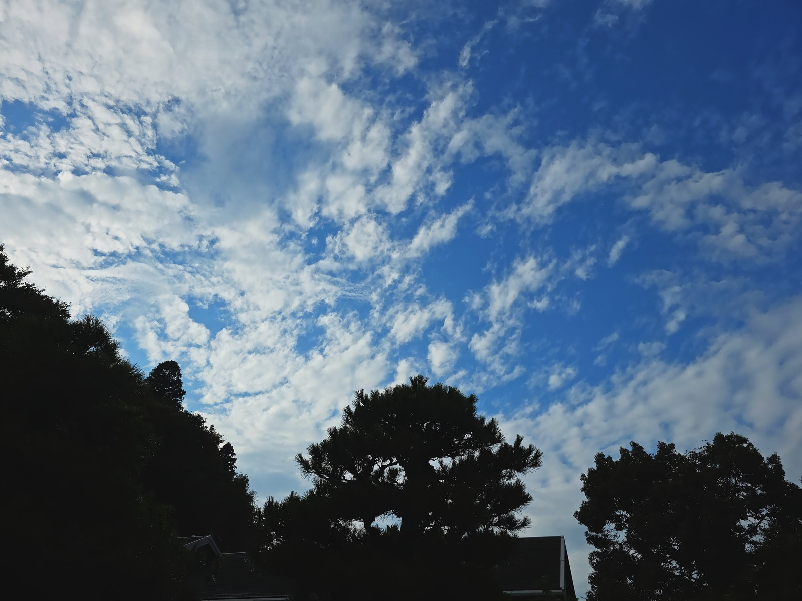
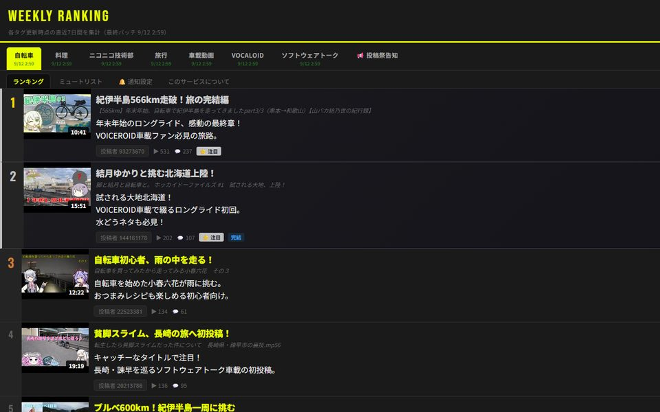
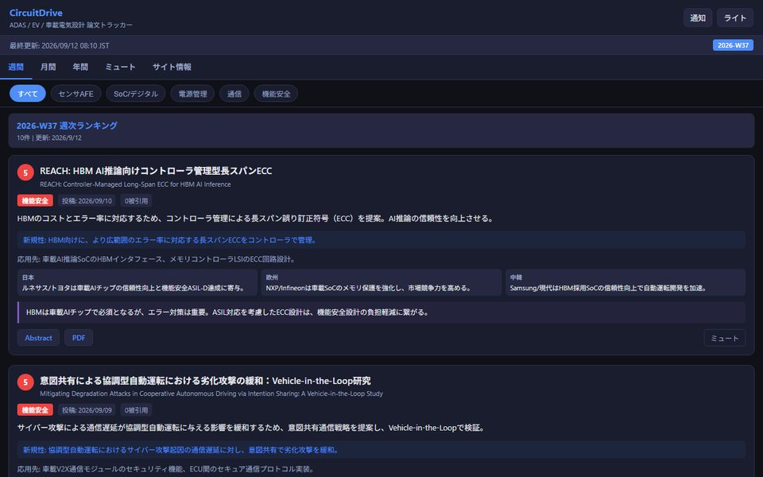
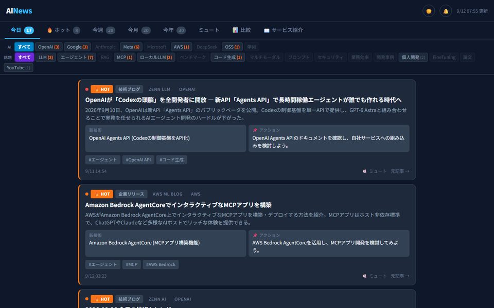

Works
作っているもの
AK CAMERA
Android用カメラアプリ
スマートフォンで一眼レフ／ミラーレスカメラのような、写真の画作りに特化したカメラアプリです。 デフォルトのカメラアプリや加工アプリの写真ともまた違う、1枚の写真をしっかり作りこむ体験をしませんか？ アプリ内のルック、撮影設定、それぞれで持っているスマートフォンのカメラ（ハードウェア）の組み合わせで、 自分だけにしか撮れない1枚をお試しください。
- 21種類のルック
- 奥行きをご自身の端末内で推定して背景をぼかす
- 4枚・8枚の多枚合成による高画質
- 通信の必要はありません



MyNews v7 Live
パーソナルニュースダイジェスト
毎朝6:00 JSTに自動更新される個人向けのニュースまとめ。世界・日本・茨城・IT・AI・自動車の6カテゴリを AIが収集・要約し、いらない話題は自動で外します。
もっと見る
- Gemini AI が 5W1H・新規性・影響・展望を自動生成
- 重要度×新規性フィルタで低品質・プロモ記事を除外
- 発信元ミュート（最大10,000件）
- 天気・服装提案を Open-Meteo API で毎日更新
- PWA対応・ダーク/ライト切替
- v7: 503対応でバックアップキーへ自動切替／Geminiモデルを動的選択

ニコニコ週間ランキング v9 Live
独自スコアの動画ランキング＋投稿祭告知
再生数だけに頼らない独自のスコアで、埋もれた良い動画を拾い上げます。 月〜金は曜日ごとにタグを更新し、土曜0:00に全タグを集計。
もっと見る
- 7タグ対応（自転車・料理・技術部・旅行・車載・VOCALOID・ソフトウェアトーク）
- 曜日分散更新でAPI負荷を分散、タグ別の鮮度を色で表示
- プッシュ通知（FCM）をタグ別・投稿祭別にON/OFF ※未実装
- 投稿祭告知を毎日自動収集して開催状況で色分け
- HOT・注目・初投稿・完結バッジ／投稿者ミュート（最大1,000人）

CircuitDrive v6.1 Live
ADAS / EV 論文トラッカー
arXiv から自動運転・車載電気設計まわりの論文を集めて、Gemini AI が電気設計エンジニアの目線で 並べ替えます。毎週土曜6:00 JSTに更新。
もっと見る
- cs.AR / eess.SP / eess.SY から取得し電気設計視点でフィルタ
- 要約・新規性・応用先・経済影響・専門家コメントをAIが生成
- 週間／月間／年間の3層タブ（月間は週次データを積んで月末に完成）
- センサAFE・SoC・電源管理・通信・機能安全の5カテゴリ
- 日本・欧州・中韓メーカー別の経済インパクト分析
- PWA対応・ダーク/ライトモード切替
- プッシュ通知（FCM） ※未実装

AINews Live
AI技術ホットトピック
OpenAI・Google・Anthropic などの発表と、Zenn / Qiita / 企業ブログ / YouTube の話題を集めます。 記事ごとに「何が新しいか」と「次に何をすればいいか」まで AI が書き出します。
もっと見る
- 今日 / ホット / 今週 / 今月 / 今年 の5タブ＋ベンダー比較タブ
- AI別フィルタ（OpenAI・Google・Anthropic・Meta・Microsoft・AWS・DeepSeek・OSS・学術）
- 話題別フィルタ（LLM・エージェント・RAG・MCP・ローカルLLM・コード生成 ほか）
- 記事ごとに「新技術」と「アクション（次にやること）」をAIが生成
- HOTバッジ・出典表示・発信元ミュート・ダーク/ライト切替
- プッシュ通知（FCM） ※未実装
※ 各Webサービスのプッシュ通知はまだ未実装です。仕組みは入れてありますが有効化していないので、 いまのところ通知は届きません。